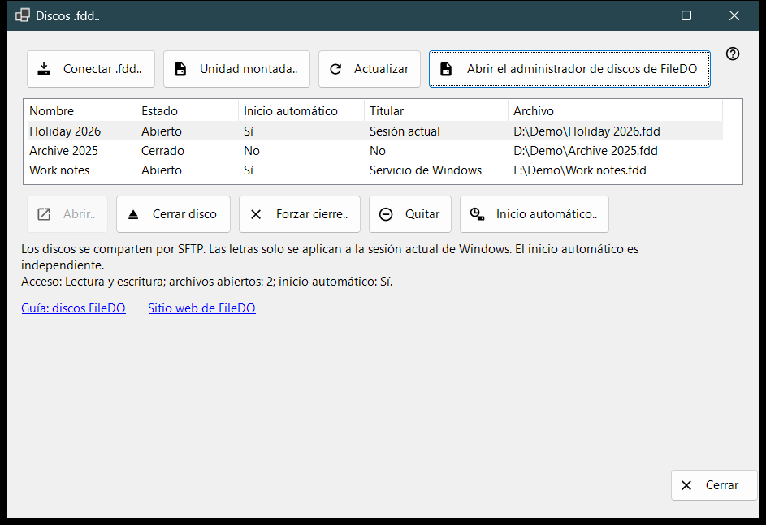
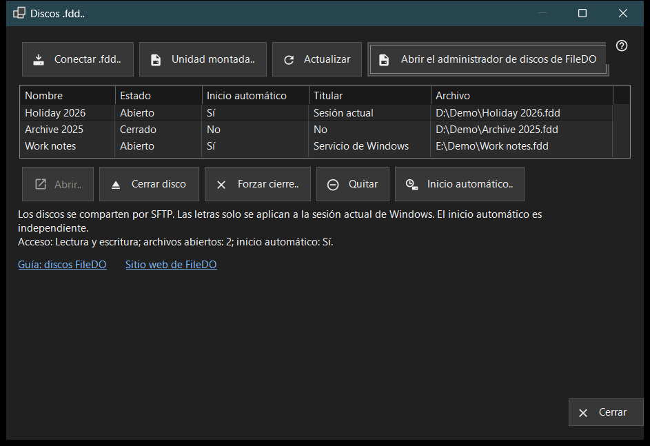

Discos .fdd
Para qué sirve
Muestra los discos .fdd de FileDO que este PC comparte por SFTP y reúne los comandos de uso diario: conectar un disco, abrirlo o cerrarlo, dejar de compartirlo y decidir si se abre junto con el servidor. Se abre desde el elemento «Discos .fdd..» del menú de añadir de la ventana principal de Share Manager.


En este orden
- Pulsa «Conectar .fdd..», elige el archivo .fdd y confirma el cuadro de opciones.
- Selecciona el disco en la lista; la línea bajo la lista muestra su modo de acceso, los archivos abiertos y el inicio automático.
- Usa «Abrir..» para un disco cerrado, «Cerrar disco» para uno abierto o «Inicio automático..» para cambiar la apertura automática.
- Pulsa «Actualizar» para releer el estado; la ventana también lo relee sola cada 10 segundos.
- Pulsa «Cerrar» para salir.
Los elementos
Lista de discos
Cada fila es un disco compartido: Nombre, Estado (Abierto, Abriendo, Cerrando, Cerrado, Bloqueado, Error o Desconocido), Inicio automático, Titular y la ruta del archivo .fdd (columna «Archivo»). Titular indica quién mantiene abierto el disco: Servicio de Windows, Sesión actual o No cuando nadie lo hace. Coloca el puntero sobre una fila para ver su ruta completa. La primera fila se selecciona sola, y la línea bajo la lista muestra su acceso (Solo lectura o Lectura y escritura), el número de archivos abiertos y su inicio automático. Cuando el servicio de uso compartido no puede compartir discos, la lista y los botones de comandos se ocultan y esa línea indica el motivo; si el propio FileDO tiene montado el disco, aparece el enlace «Abrir el administrador de discos de FileDO».
Conectar .fdd..
Elige un archivo .fdd y regístralo para compartirlo. El cuadro de opciones pide un Nombre, la opción «Solo lectura» y «Abrir tras registrar» (marcada de forma predeterminada). Para un disco cifrado pide además la Contraseña, y puedes asignar al disco una letra de unidad o dejar «Sin letra - solo compartir». Una letra dura solo la sesión actual de Windows. Si el disco sigue abierto en FileDO, guárdalo y ciérralo primero allí. Si el registro se completa pero el disco no se abre, un mensaje lo indica y el disco queda en la lista como cerrado.
Unidad montada..
Elige una unidad lista de este PC, por ejemplo un disco que FileDO ya ha montado. La ventana se cierra y la ventana principal continúa con su paso habitual de añadir carpeta para esa unidad.
Abrir, cerrar y quitar
«Abrir..» vuelve a abrir un disco cerrado, bloqueado o con error y pide la contraseña de uno cifrado. «Cerrar disco» solo está disponible para un disco abierto; los clientes pierden el acceso temporalmente y los archivos abiertos disponen de hasta 30 segundos para cerrarse. «Forzar cierre..» desconecta de inmediato los archivos abiertos, por lo que se pueden perder datos sin guardar. «Quitar» deja de compartir: el disco se cierra, se borran su ajuste de inicio automático y la clave guardada, y el archivo .fdd se conserva. Cada una de estas acciones pide confirmación antes, con Cancelar como respuesta predeterminada.
Inicio automático
La columna «Inicio automático» muestra Sí o No para cada disco sin necesidad de seleccionarlo. Un guion (-) significa que el servicio de uso compartido no admite el inicio automático; entonces «Inicio automático..» está desactivado. «Inicio automático..» cambia el ajuste tras una confirmación: al activarlo, el disco se abre junto con el servidor y la contraseña de un disco cifrado se guarda en el almacén protegido de Windows de este PC; al desactivarlo, se borra esa clave guardada. El ajuste es independiente del Estado, así que un disco cerrado o con error puede tener el inicio automático activado. Las filas de FileDO de la lista de la ventana principal también lo muestran.
Guía, sitio web y Cerrar
«Guía: discos FileDO» y «Sitio web de FileDO» abren la guía y el sitio de FileDO, el programa del que proceden los discos. Si el administrador de discos de FileDO no se encuentra en este PC, la ventana indica que instales FileDO desde su sitio web. «Cerrar» sale de la ventana; no se puede cerrar mientras hay una operación de disco en curso.
Ajustes del gestor · Ajustes de uso compartido SFTP · Ajustes del servidor de intercambio